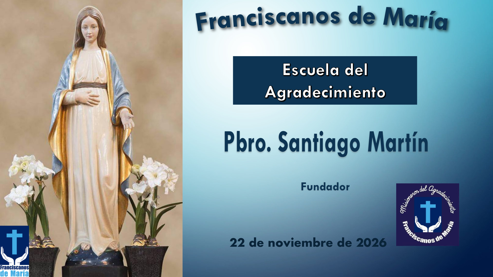
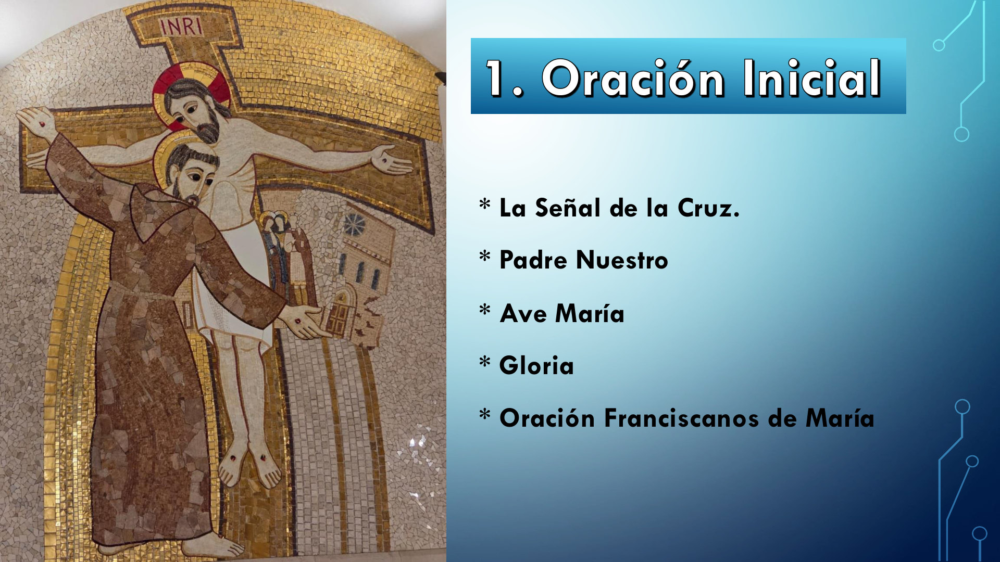
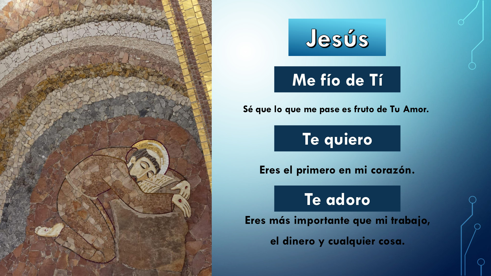
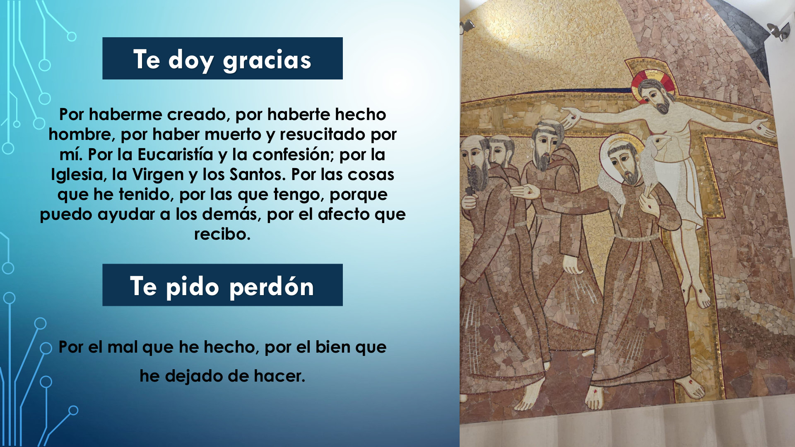
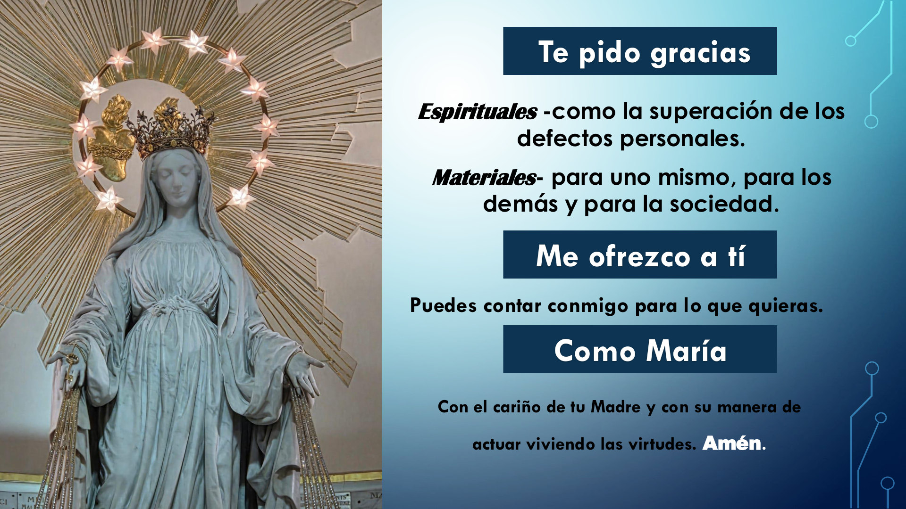
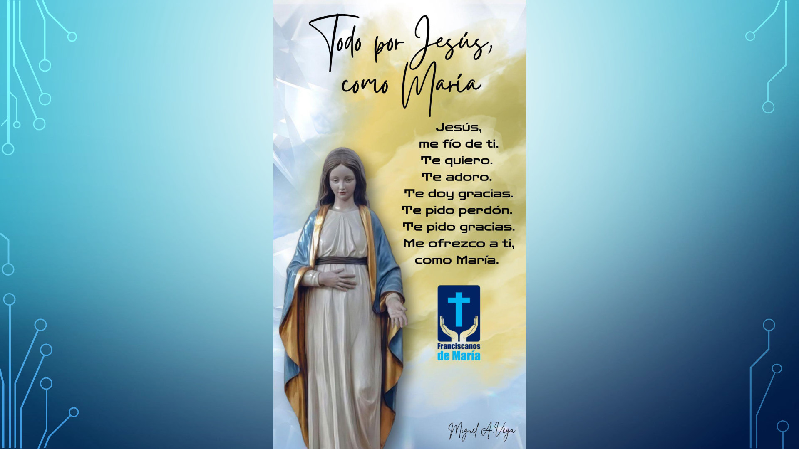
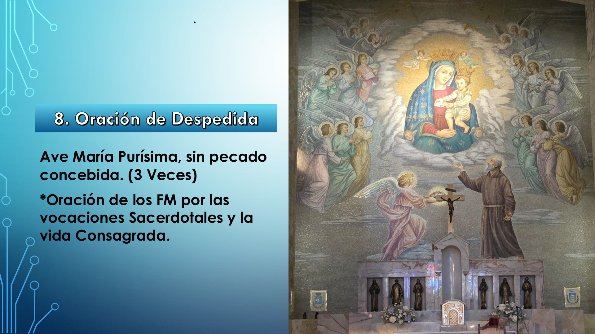
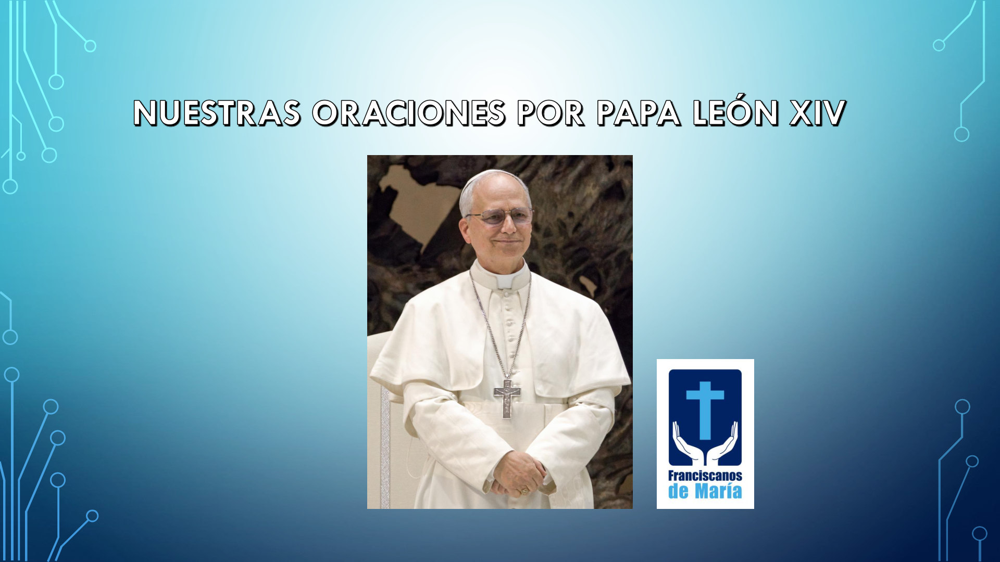

Tomaremos 2 minutos para pensar cómo hemos vivido positivamente el propósito de esta semana.
Recuerda pensarlo en clave SOR:
Nota: Hermanos, si durante la semana no pudiste vivir el propósito con intención, puedes mantenerte en silencio y cederle la oportunidad a otro. Esta semana tendrás otro propósito, el cual podrás recordarlo y vivirlo con intención según te guíe el Espíritu Santo.
Comparte tu experiencia positiva con humildad, de manera breve (máximo 3 min), usando el método SOR.
Recuerda pensarlo en clave SOR:
Puedes comenzar diciendo:
“Doy gracias a Dios y a María Santísima por… SOR”
“Gracias Señor por haberme dado la oportunidad de haberte servido… SOR”
“Velad entonces, pues no sabéis cuándo vendrá el dueño de la casa, si al atardecer, o a medianoche, o al canto del gallo, o al amanecer: no sea que venga inesperadamente y os encuentre dormidos”.
(Mc 13, 35-36)El Adviento empieza del mismo modo que terminó, las semanas anteriores, el Tiempo Ordinario: con una llamada de advertencia, con una invitación a estar preparados. Si el Señor, en la parábola de las vírgenes sensatas y las vírgenes necias, nos decía que no sabemos cuándo será el día o la hora en que nos llegará la muerte, en esta ocasión nos habla de la ignorancia en que está el empleado acerca de cuándo llegará el dueño de la casa.
Se trata, pues, de estar preparados, pero para cosas distintas; aquella advertencia era para que estuviéramos preparados para la muerte -que es la vida definitiva- y para el juicio. Ésta es para acoger aquí en la tierra al Dios de la vida, a Cristo.
¿Cómo prepararnos? Evidentemente, el mejor modo de hacerlo es tener la casa bien dispuesta para cuando llegue el dueño a vivir en ella. Eso significa que debemos tener nuestras cosas en orden, la tarea hecha, las obligaciones cumplidas, las grietas reparadas, las heridas curadas.
Y todo eso lo podemos hacer, antes que nada, haciendo una visita de inspección por el lugar para ver con detenimiento qué está fallando, qué va mal, qué necesita arreglarse. Es decir, tenemos que despertar la conciencia para, con ella como luz, poder revisar nuestra vida, nuestra alma. Para hacerlo es preciso escuchar la voz de Dios a través de su Palabra y también a través de la Iglesia. ¿Qué nos dice Cristo en el Evangelio, qué nos enseña la Iglesia?. A la luz de esa doctrina, revisemos nuestra vida para descubrir qué tenemos que reparar, antes de que sea demasiado tarde.
Hacer examen de conciencia detallado sobre el mal que hago y el bien que dejo de hacer, a la luz de lo que enseña la Iglesia y dice el Evangelio. Y luego confesarme.
Aquí no pedimos.
Demos gracias a Dios y a María Santísima: por la Iglesia, por Papa León XIV, por los Obispos, Sacerdotes, por Padre Santiago y por los Franciscanos de María.
Entre todos debemos tomarnos máximo 2 minutos en silencio para este momento.

Padre. Tu Hijo nos pidió que acudiésemos a Ti suplicándote que enviaras obreros a tus mies, que es la Iglesia. Necesitamos vocaciones consagradas. Hoy, más aún que en la época de Jesús, la mies es mucha y los obreros pocos. Por eso te pedimos que nos des el don de las vocaciones.
Te suplicamos que llames a jóvenes que quieran ser santos a consagrarte a Ti, y por amor a Ti, a servir a la Iglesia, a vivir el carisma del agradecimiento, a amarte y hacerte amar.
Sostén en la llamada a quienes has elegido, para que no flaqueen y sigan adelante cada vez con mayor entrega. Atiende nuestras súplicas, Señor, y manda a los Franciscanos de María vocaciones para que podamos servirte como Tú nos pides. Te lo pedimos por intercesión de María, la Inmaculada, la Siempre Virgen, la Madre de tu Hijo. Amén.
El compartir es la parte más importante de la Escuela de Agradecimiento: todos los miembros estamos llamados a participar cada semana como muestra de nuestro interés y deseo de vivir la Espiritualidad del Agradecimiento. Esto lo logramos recordando y viviendo el propósito con intención, todos los días.
Magnificat.tv: es nuestra televisora online. Recuerda ingresar a la sección de “Formación FM” con su usuario y su clave, al menos una vez al mes, para evitar que se desactive su cuenta.
Canal YouTube de los FM: recuerda suscribirte al canal “Franciscanos de María”, donde encontrarás: Misa, Homilía diaria, Actualidad Comentada, Rosario del agradecimiento, Coronilla de la Divina Misericordia, entre otros temas.
Hay necesidad de nuevos Catequistas. Quien esté interesado, al finalizar la Escuela puede quedarse unos minutos más para recibir información al respecto.
